1.新增作業
1.1點選左側【部門組織管理】，點選右側畫面中的
圖示，將開啟新視窗，完整輸入資料後請點選按鈕
來儲存且新增下一筆資料，或者點選按鈕
來儲存後結束退出，參考(圖B-15)。
HRMS人力資源系統
貳、人事管理系統 (※注意，【新增】、【刪除】、【編輯】、【查詢】等功能限具有相應功能權限者可使用。)
A.人事報表管理
1.人事基本資料明細表
1.1點選左側【人事基本資料明細表】，參考(圖B-1)。
1.2本作業可依【公司】、【部門】、【員工】所顯示的下拉式選單或是選擇【員工標號】來查詢已建檔 人員資料，參考(圖B-1)。
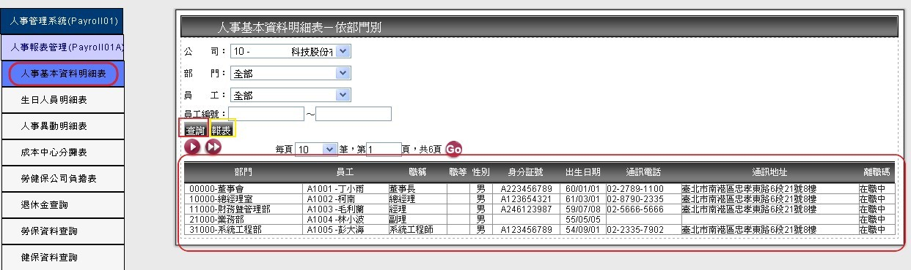(圖B-1)
1.3也可依 【公司】、【部門】、【員工】所顯示的下拉式選單或是選擇【員工標號】來匯出已建檔人員資料報表，參考(圖B-2)。
(※匯出的格式有EXCEL、PDF、WORD，是使用.net的技術報表，無須額外支付費用)
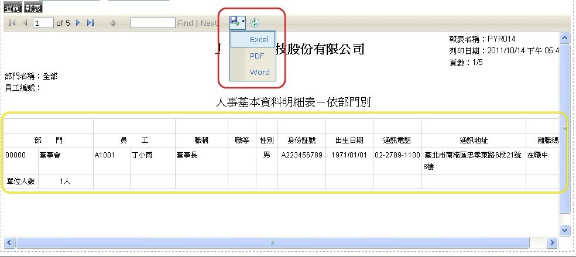(圖B-2)
2.生日人員明細表
2.1點選左側【生日人員明細表】，參考(圖B-3)。
2.2本作業可依【公司】、【部門】、【員工】、【月份】所顯示的下拉式選單來查詢當月生日人員資料，參考(圖B-3)。
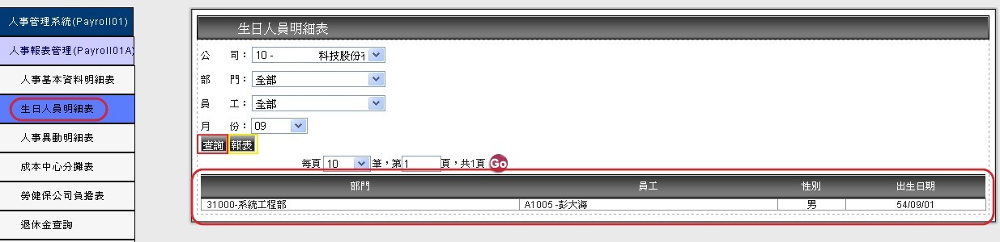(圖B-3)
2.3也可依 【公司】、【部門】、【員工】、【月份】所顯示的下拉式選單來匯出當月人員生日報表，參考(圖B-4)。
(※匯出的格式有EXCEL、PDF、WORD，是使用.net的技術報表，無須額外支付費用)
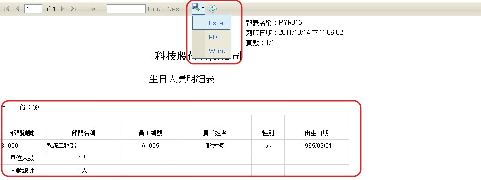(圖B-4)
3.人事異動明細表
3.1點選左側【人事異動明細表】，參考(圖B-5)。
3.2本作業可依【公司】、【部門】、【員工】、【異動期間】、【查詢條件】、【異動條件】、所顯示的下拉選單來查詢異動資料，參考(圖B-5)。
(※查詢的條件有分依個人、依異動條件可以做選擇，若是選擇依異動條件則可以再選擇4種異動條件做查詢)
3.3也可依 【公司】、【部門】、【員工】、【異動期間】、【查詢條件】、【異動條件】所顯示的下拉式選單來匯出人事異動明細報表，參考(圖B-5)。
(※匯出的格式有EXCEL、PDF、WORD，是使用.net的技術報表，無須額外支付費用)
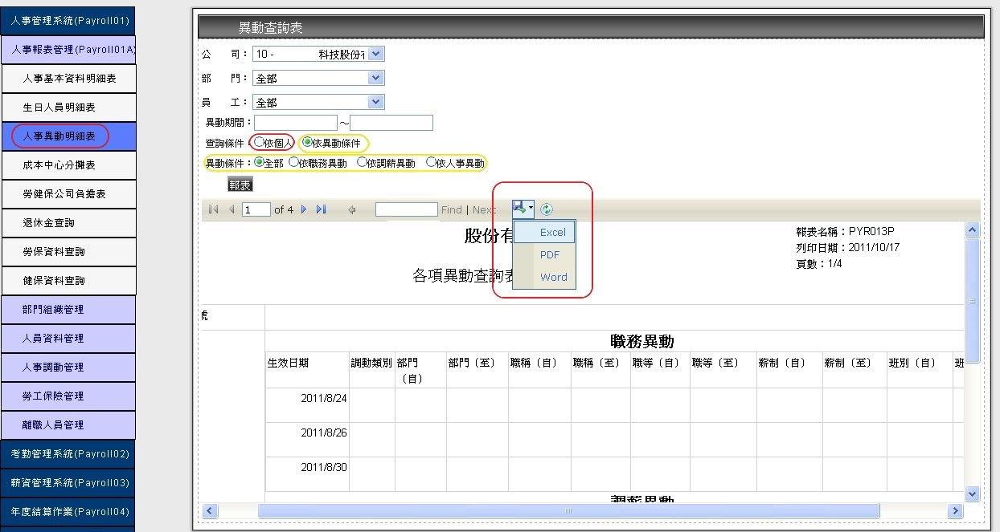(圖B-5)
4.成本中心分攤表.
4.1點選左側【成本中心分攤表】，參考(圖B-6)。
4.2本作業可依【公司】、【部門】、【員工】所顯示的下拉式選單來查詢成本分攤表及匯出分攤報表，，參考(圖B-6)。
(※匯出的格式有EXCEL、PDF、WORD，是使用.net的技術報表，無須額外支付費用)
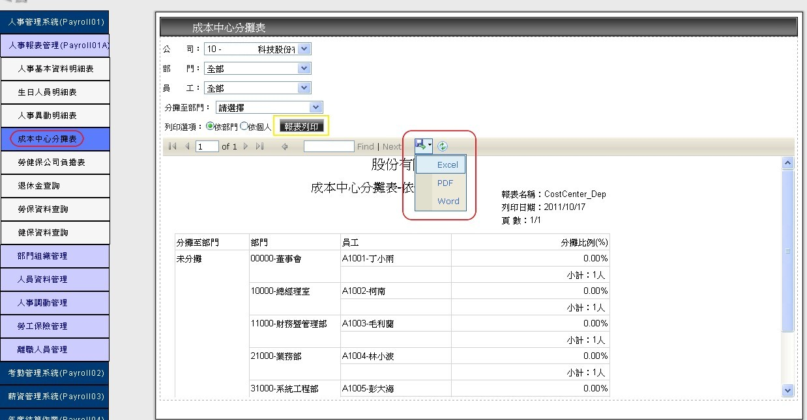(圖B-6)
5.勞健保公司負擔表
5.1點選左側【勞健保公司負擔表】，參考(圖B-7)。
5.2本作業可依【公司】、【部門】、【員工】、【計薪年月】所顯示的下拉式選單來查詢勞健保公司負擔表及匯出報表，參考(圖B-7)。
(※匯出的格式有EXCEL、PDF、WORD，是使用.net的技術報表，無須額外支付費用)
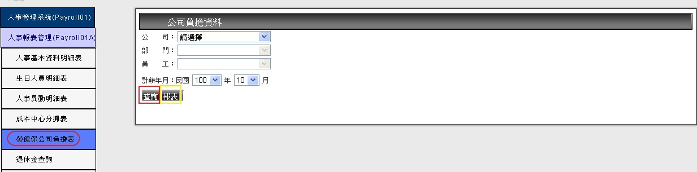(圖B-7)
6退休金查詢
6.1點選左側【退休金查詢】，參考(圖B-8)。
6.2本作業可依【公司】、【部門】、【員工】、【提撥年月】所顯示的下拉式選單來查詢退休金資料參考(圖B-8)。
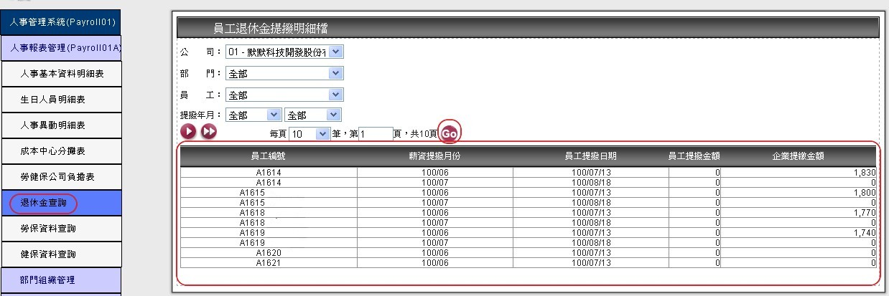(圖B-8)
7.勞保資料查詢
7.1 點選左側【勞保資料查詢】，參考(圖B-9)
7.2 可以依照欲查詢條件使用下拉式選單選擇【公司】、【部門】、【員工】，亦可點【全部】、
【投保】、【調整】、【退保】等各種條件，將可查出所需的歷史資料，參考(圖B-9)
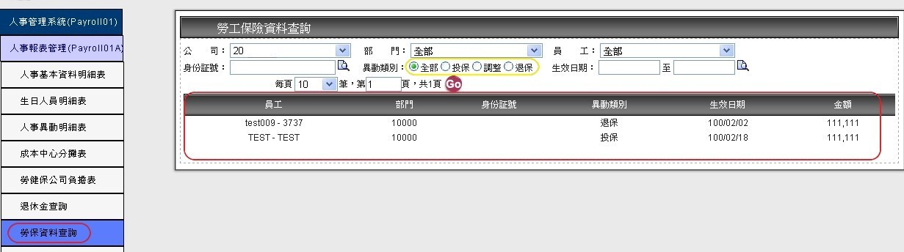(圖B-9)
7.3也可以在【身份證號】欄輸入想要查詢人員的身分證字號，再按查詢，將可以得到精確的資料，
參考(圖B-10)
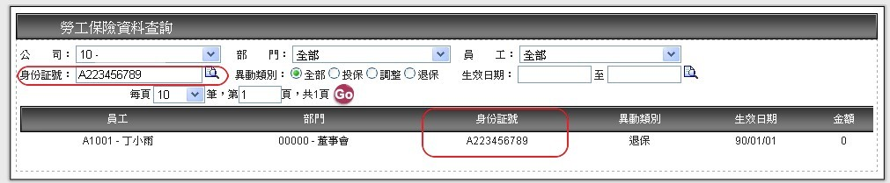
(圖B-10)
7.4【生效日期】點選日期來選擇，再按查詢，將可以得到生效期間的精確資料，參考(圖B-11)
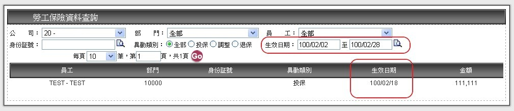
(圖B-11)
8.健保資料查詢
8.1點選左側【健保資料查詢】，參考(圖B-12)。
8.2 可以依照查詢條件使用下拉單方式選擇【公司】、【部門】、【員工】，將可查出所需的歷史資料， 參考(圖B-12)。
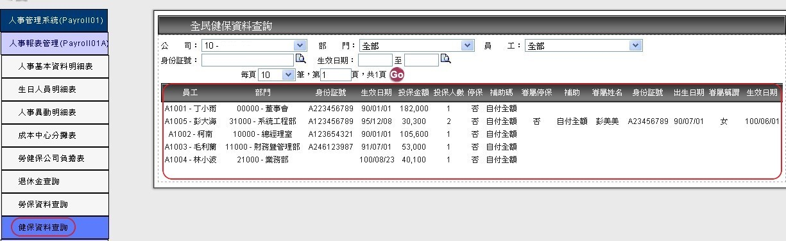(圖B-12)
8.3可以在【身份證號】欄輸入想要查詢人員的身分證字號，再按查詢，將可以得到精確的資料，
參考(圖B-13)。
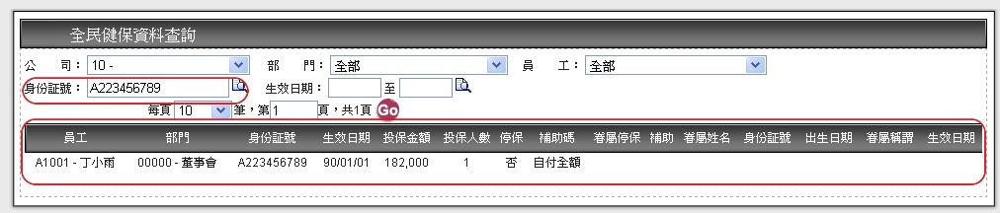
(圖B-13)
8.4或是選擇【生效日期】再按查詢，將可以得到生效期間的精確資料，參考(圖B-14)。
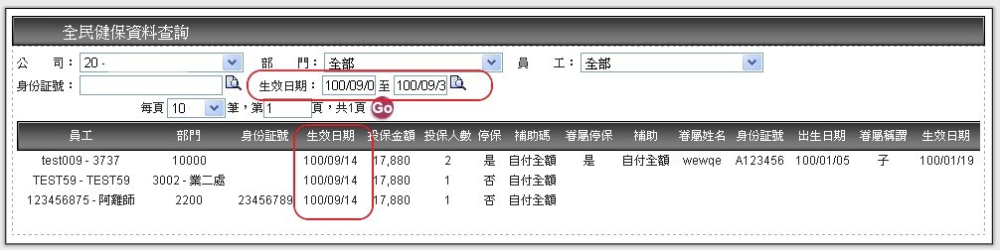
(圖B-14)
B.部門組織管理
1.新增作業
1.1點選左側【部門組織管理】，點選右側畫面中的
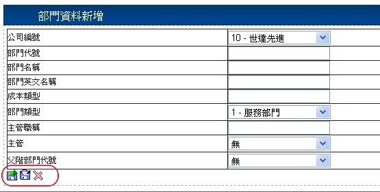(圖B-15)
2.查詢作業
2.1 本作業可依【公司】、【部門代號】來查詢已建檔公司部門資料，參考(圖B-15-1)。
2.1 單筆部門資料請點選查詢，將出現新視窗顯示所要查詢的部門明細資料。
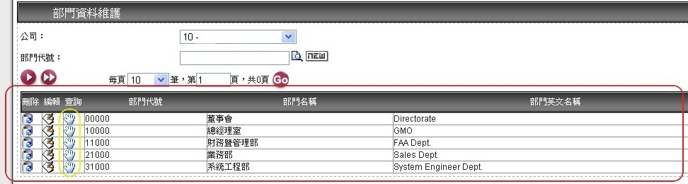(圖B-15-1)
3.編輯刪除作業
3.1於選擇
編輯來修改公司部門明細資料，結束請點選
更新或
取消來退出，參考(圖B-16)。
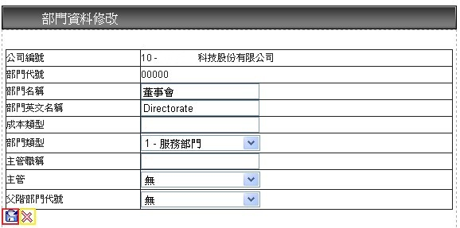(圖B-16)
3.2可直接點選
刪除退出，參考(圖B-17)。
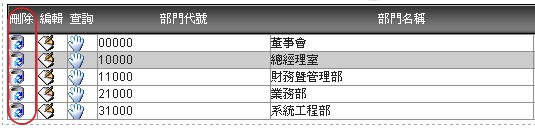(圖B-17)
C.人員資料管理
1新增作業
1.1 點選左側【人事資料管理】，參考(圖B-18)
1.2 點選右側畫面中的
且繼續增修此筆詳細資料，將開 啟新視窗(圖B-20)，用來記錄同仁更詳細資料
1.3 基本資料輸入後亦可點選按鈕
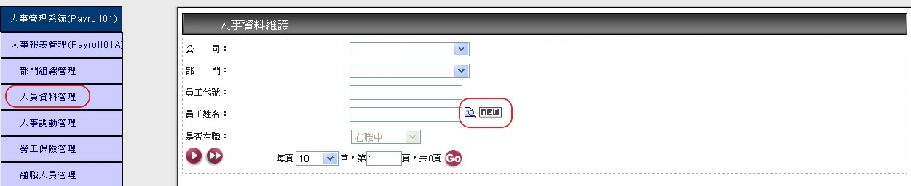(圖B-18)
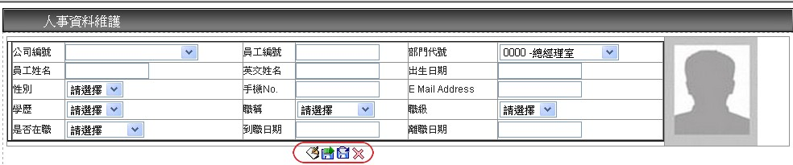(圖B-19)
1.4 詳細資料分為八個部份，第一部分為【背景】，將背景中的詳細資料填入，參考(圖B-20)。
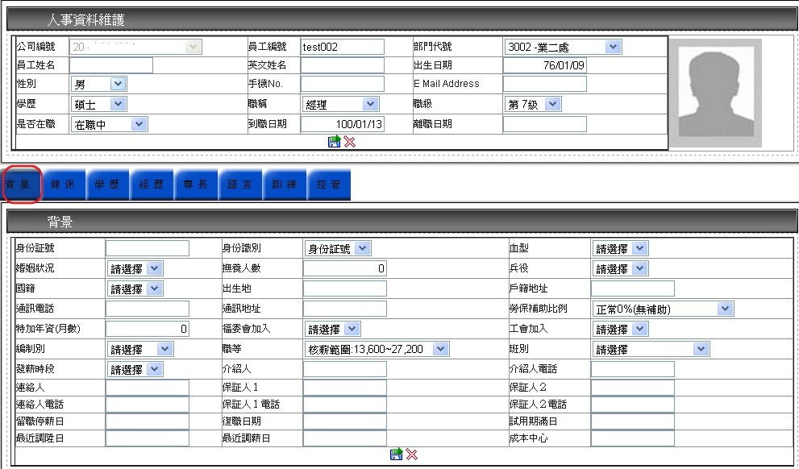(圖B-20)
1.5第二部分為【健保】，將全民健保資料填入，亦可將眷屬加保資料一併輸入，參考(圖B-21)
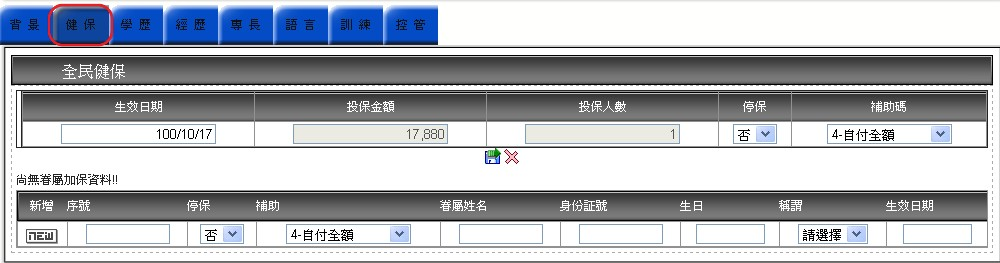(圖B-21)
1.6 第三部分為【學歷】，將個人學歷的詳細資料填入，參考(圖B-22)
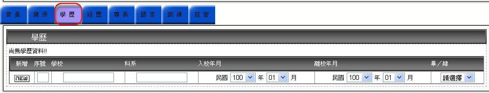(圖B-22)
1.7 第四部分為【經歷】，將同仁先前的工作經歷填入，參考(圖B-23)
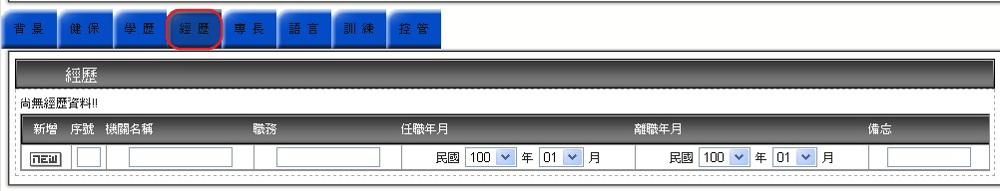(圖B-23)
1.8 第五部份為【專長】，此部份可將證照或證書等資料輸入，亦可做檔案存入的動作，參考(圖B-24)
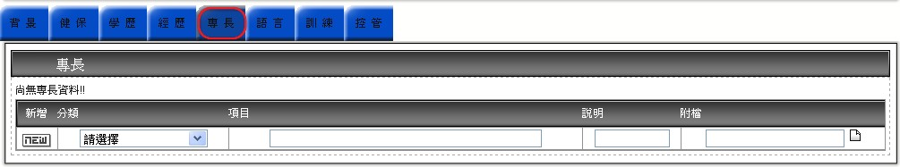(圖B-24)
1.9 第六部份為【語言】，使用下拉選單方式建立語言資料，參考(圖B-25)
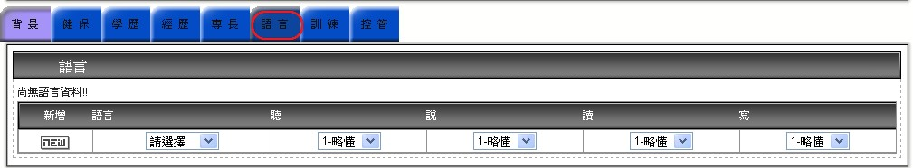(圖B-25)
1.10第七部份為【訓練】，公司在職訓練課程，在此完整紀錄，參考(圖B-26)
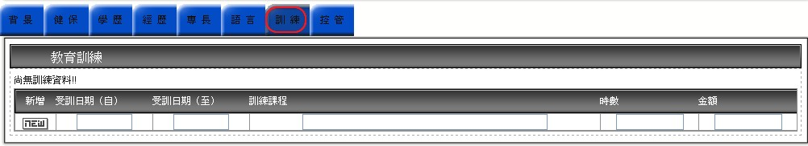(圖B-26)
1.11 第八部分為【控管】，本系統特別加強安全控管作業，參考(圖B-27)
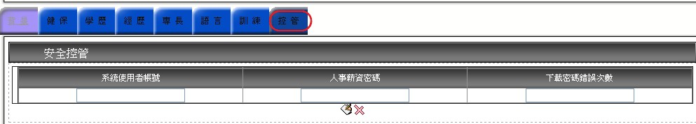(圖B-27)
2查詢作業
2.1 本作業可依【公司】、【部門】所顯示的下拉式選單來查詢已建檔人員資料，參考(圖B-28)。
2.2單筆個人資料請點選查詢，將出現新視窗顯示所要查詢的人員資料 。
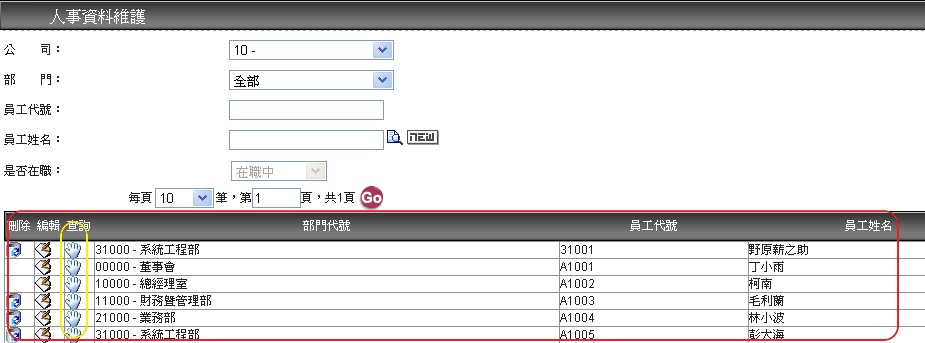(圖B-28)
3編輯與刪除作業
3.1欲編輯歷史資料點選
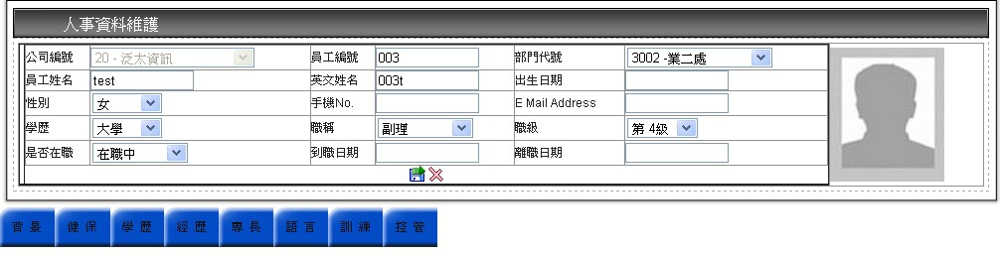(圖B-29)
3.2 欲刪除歷史資料，請點選
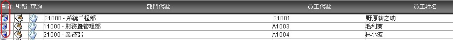(圖B-29-1)
D.人事調動管理
1新增作業
1.1 點選左側【人事調動管理】，參考(圖B-30)
1.2 點選右側畫面中的
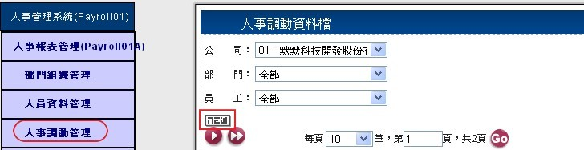(圖B-30)
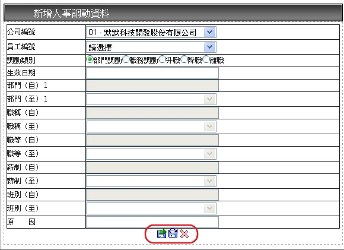(圖B-31)
2查詢作業
2.1本作業可依【公司】、【部門】、【員工】所顯示的下拉式選單來查詢已建檔人員資料，參考(圖B-32)。
2.2單筆個人資料請點選查詢，將出現新視窗顯示需要查詢的人事調動資料
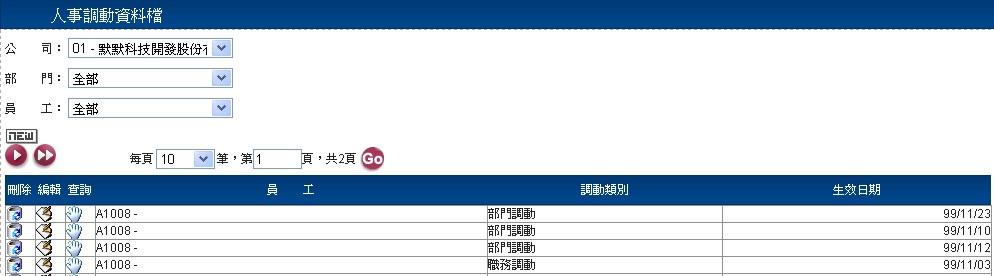(圖B-32)
3編輯與刪除作業
3.1 欲編輯歷史資料依照(圖B-30)，點選
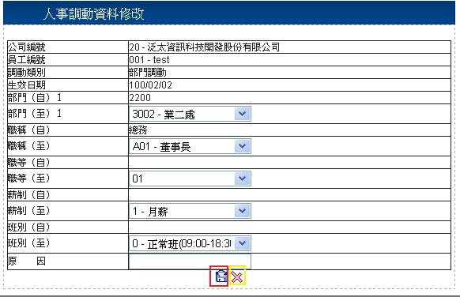(圖B-33)
3.2 欲刪除歷史資料請點選
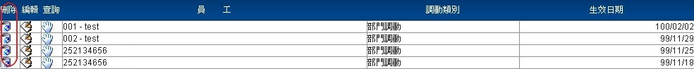(圖B-33-1)
E.勞工保險管理
1新增作業
1.1 點選左側【勞工保險管理】，參考(圖B-34)。
1.2 本作業先選擇【公司】所顯示的下拉式選單來選取欲新增的公司人員資料，點選
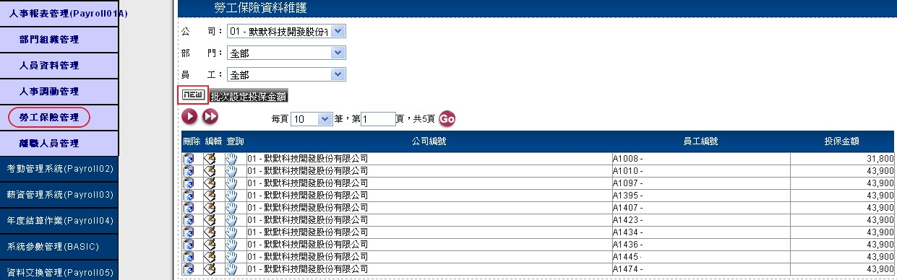(圖B-34)
1.3.依【公司編號】、【員工編號】、【異動類別】下拉式選單選定特定人員，手動填入 【勞保投保金額】編輯完畢後點選
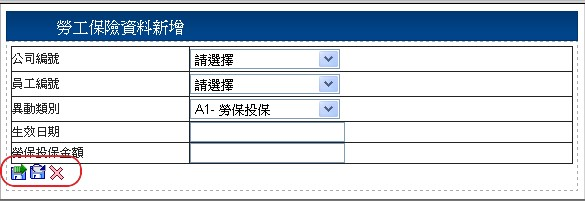(圖B-35)
2查詢作業:
2.1 本作業可依【公司】、【部門】、【員工】所顯示的下拉式選單來查詢已建檔之人員【公司編號】、【員工編號】，參考(圖B-36)。
2.2單筆個人資料請點選查詢，將出現新視窗顯示所要查詢的人事調動資料 ，點選
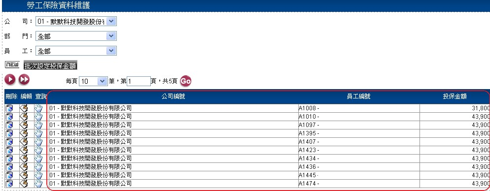(圖B-36)
3編輯與刪除作業
3.1 選擇欲修改的【員工編號】點選
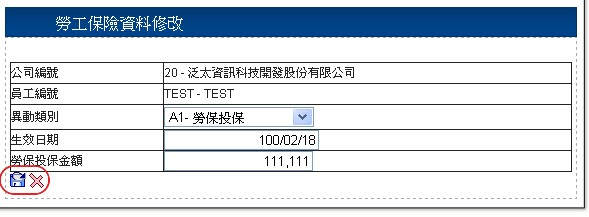(圖B-37)
3.2. 欲刪除資料可直接點選
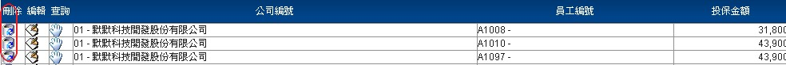(圖B-37-1)
4.批次設定投保金額:使用者可以對勞工保險管理做批次金額設定操作，參考(圖B-38)。
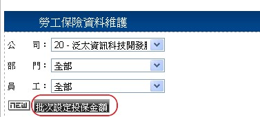(圖B-38)
F.離職人員管理
1編輯作業
1.1 點選左側【離職人員管理】選擇右側畫面【公司】、【部門】、【員工代號】、【員工姓名】系統將會帶出已離職人員資料，參考(圖B-39)。
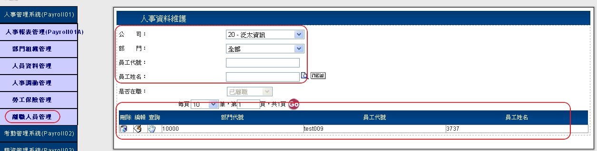(圖B-39)
1.2 選擇欲修改的資料點選
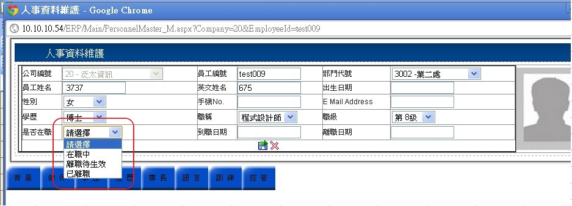(圖B-40)
2查詢作業
2.1 本作業可依【公司】、【部門】、【員工代號】、【員工姓名】所顯示的下拉式選單來查詢已建檔之離職員工，參考(圖B-39)。
2.2單筆個人資料請點選查詢，將出現新視窗顯示所要查詢的人事調動資料 ，點選
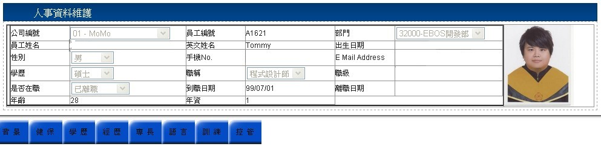(圖B-41)